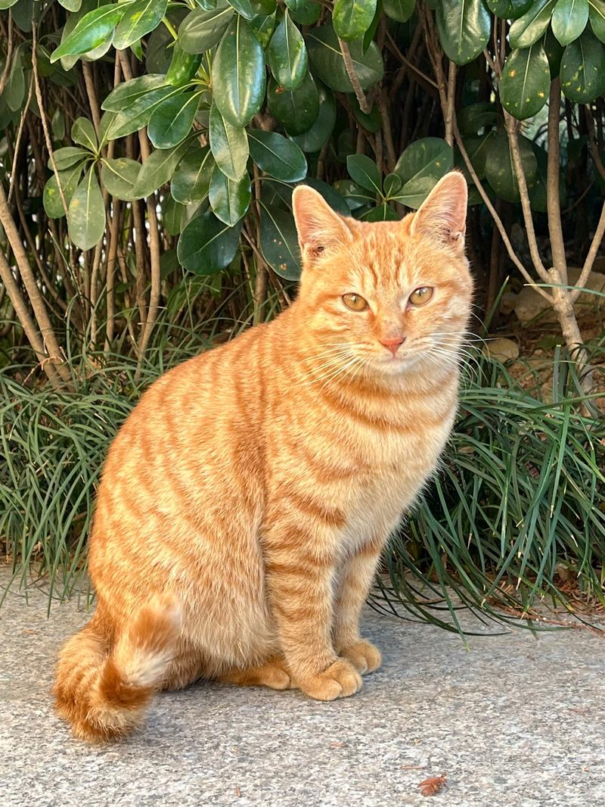
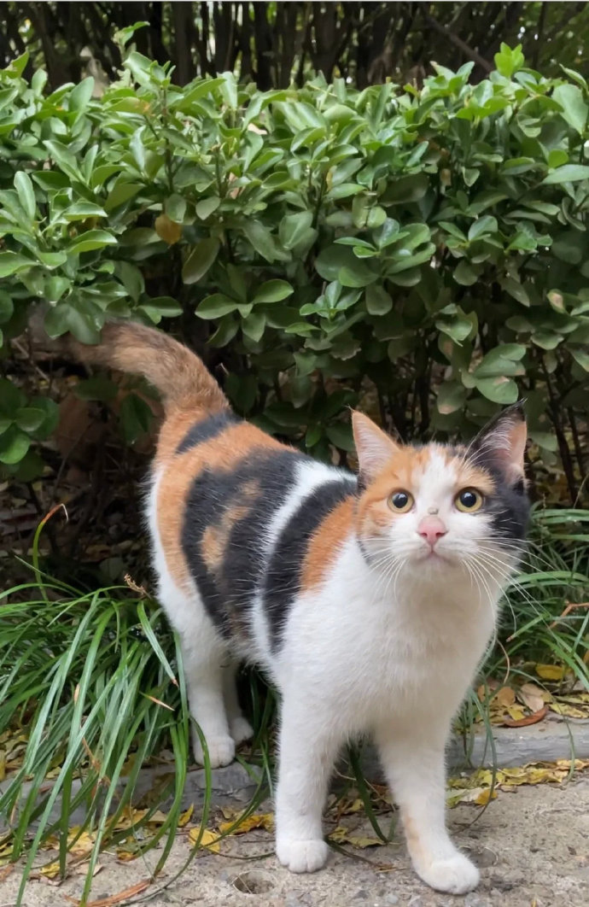
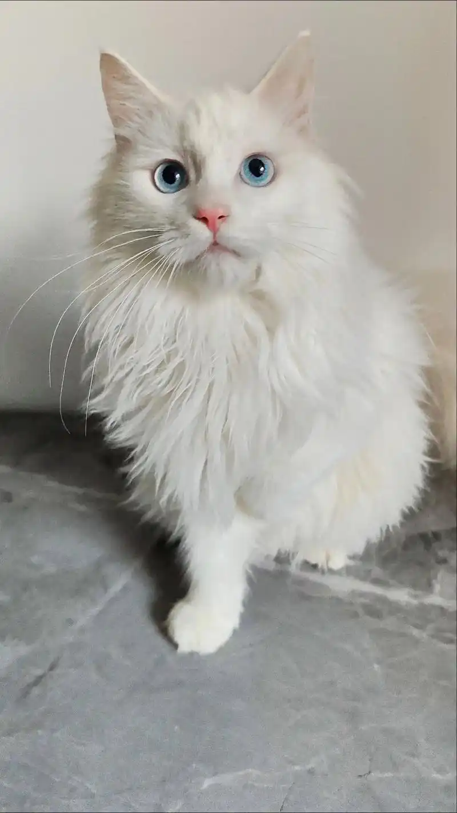
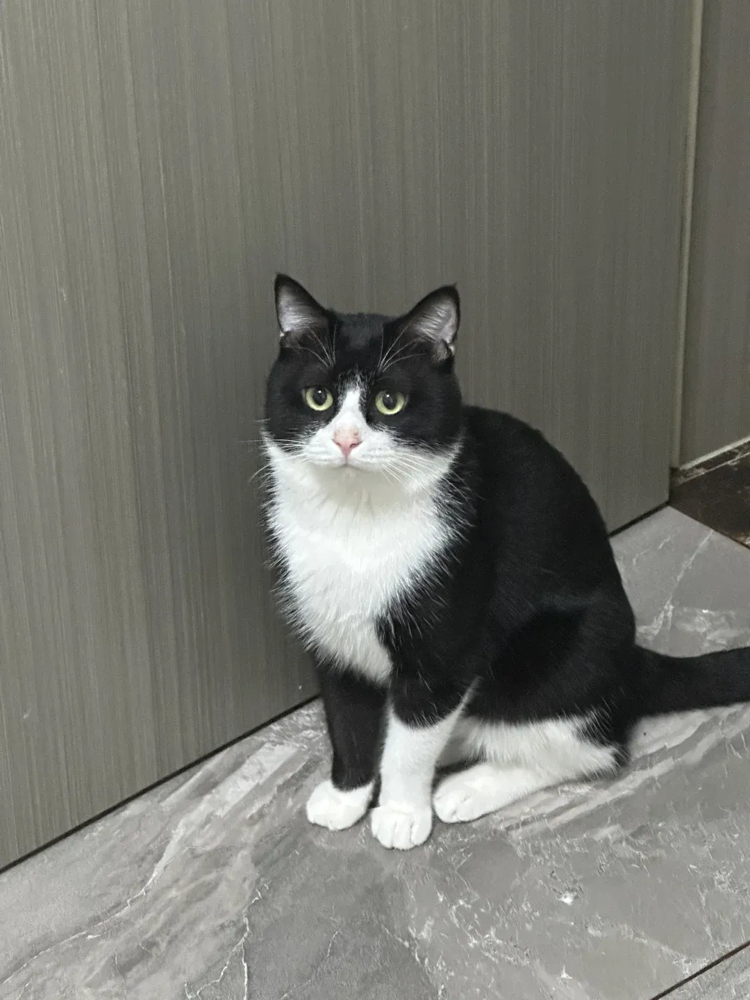
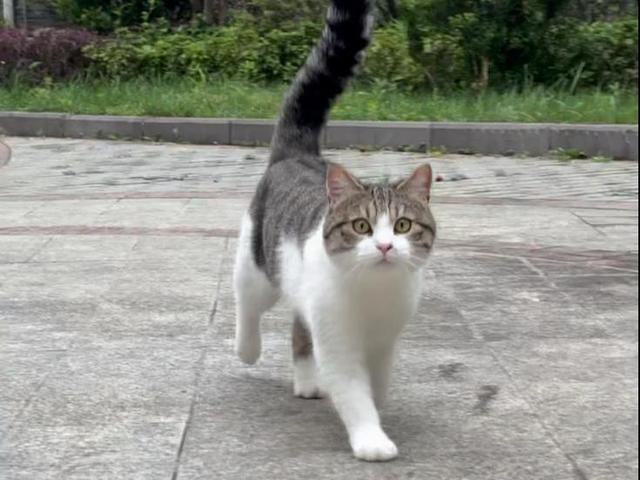

中国本土猫咪品种介绍
中华田园猫是中国本土的自然猫种，经过千百年的自然演化，形成了各具特色的品种。它们不仅颜值高、身体强壮，而且适应能力强，是非常优秀的伴侣动物。
常见中国本土猫咪品种

狸花猫
身上有黑、灰相间的美丽虎斑纹，体格健壮，头脑聪明，以捕猎技巧而著称。性格独立但认主后非常忠诚[1](@ref)。
虎斑纹
聪明机灵
捕猎能手

橘猫
橘猫是毛色分类而非品种，国内大部分橘猫都是狸花猫。它们以爱吃、黏人、会撒娇著称，有"十只橘猫九只胖"的说法[1,2](@ref)。
橘色被毛
性格温和
易胖体质

三花猫
身上有黑、橘和白三种颜色的猫，大部分三花猫都是母猫。每只三花猫的花纹都是独一无二的。性格活泼开朗，非常适合饲养[1,4](@ref)。
三色被毛
多为母猫
活泼开朗

山东狮子猫
又称临清狮子猫，由波斯猫与鲁西本地狸猫杂交繁育而来。以纯白毛色和鸳鸯眼(一蓝一黄)最为珍贵。身体强壮、性格温婉、依赖主人[1,3](@ref)。
长毛
鸳鸯眼
温顺亲人

奶牛猫
因黑白花色像奶牛而得名，好奇心强，黏人，活泼，精力旺盛，有"猫中哈士奇"之称，经常上演迷惑行为[1,2](@ref)。
黑白花色
活泼好动
好奇心强

四川简州猫
产于四川地区的古老猫种，耳朵特别，有凸出的卷层，看似四只耳朵，故又名"四耳猫"。身材强壮，动作敏捷，是捕鼠能手[3](@ref)。
四耳特征
捕鼠能手
历史悠久
中华田园猫的特点与优势
身体强壮
经过自然选择，身体抵抗力强，患病风险相对较小[1](@ref)。
活泼好动
精力充沛，有一定的捕猎技巧，能为家庭增添活力[1](@ref)。
适应力强
能很好地适应各种环境，容易饲养[1](@ref)。
聪明伶俐
学习能力强，能很快学会上厕所、埋猫砂等[1](@ref)。
饲养注意事项
虽然中华田园猫身体强壮、容易饲养，但仍需注意以下事项[1](@ref)：
- 避免喂食巧克力、洋葱、葡萄、牛奶等对猫有害的食物
- 饮食不宜过咸，剩饭剩菜不适合猫咪长期食用
- 高层住宅需安装防护网，防止猫咪意外坠落
- 定期接种疫苗和驱虫，保障猫咪健康
- 适时进行绝育手术，控制流浪猫数量
- 提供足够的活动空间，经常与猫咪互动玩耍
- 尽量避免散养，减少意外风险
只要科学饲养，中华田园猫能成为非常出色的家庭伴侣，给您带来无数欢乐时光。